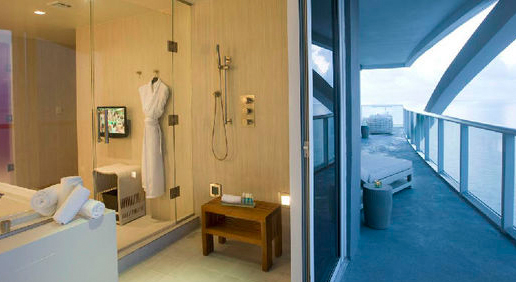

爱情海还有一个非常美妙的称号：“葡萄酒色之海”，春夏二季，在阳光的照射下，爱琴海的海水呈现一种晶莹剔透的颜色，清澈中泛着灿灿的金色，到了夕阳落下的时候，海水就会变成一种绛紫色，好像杯中的葡萄酒，在盛夏的天空下，带给人心旷神怡的感觉
海域南北长610公里，东西宽300公里，海岸线非常曲折，港湾众多，岛屿星罗棋布，所以爱琴海又有“多岛海”之称，海中最大的一个岛名叫克里特岛，面积约8300平方公里，东西狭长，爱琴海南部的屏障。
距离雅典最近的一个岛屿。真正让爱琴那岛扬名的是拯救希腊的萨拉密斯。岛上建于公元前6世纪末5世纪初的阿菲亚神庙，是希腊古典时代后起典型代表建筑。